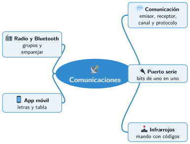

Bloque IV · Robótica aplicada
UD10 Control y comunicaciones
Sesiones
- Sesión 10.1 Cómo se comunican las máquinas
- Sesión 10.2 El puerto serie
- Sesión 10.3 Manejar el robot con un mando
- Sesión 10.4 Radio y Bluetooth con Micro:Bit
- Sesión 10.5 Manejar el robot desde el móvil
Al terminar la unidad
- 🛠️ Práctica con las herramientas
- 📝 Repaso de la unidad
- ✅ Autoevaluación
- 🎯 Situaciones de aprendizaje del bloque
Mapa mental de la unidad

✏️ Repasa la unidad con el mapa: tapa una rama y explica en voz alta lo que pone.